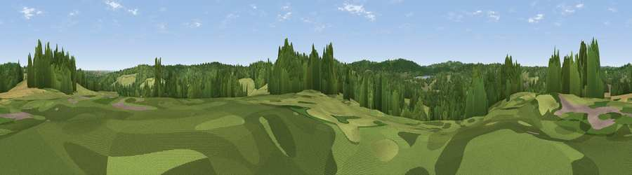

Viewpoint near Robertsbridge
#39912 in England · top 49% of its area beats it · near Robertsbridge · footpathWhere it is
The exact computed spot (TQ 73975 22375). Click the marker for map links.
Public access: a public right of way passes within 41 m of this spot. Computed from Natural England's CRoW access layer and OpenStreetMap rights of way — not the legal definitive map. Always verify locally.
The view, rendered

A 360° render of this exact spot computed from the terrain model, tree cover and land cover — summer colours, afternoon light, calibrated against photographs of famous viewpoints. Real trees, hedges and buildings will differ in detail.
The panorama
Grey silhouette: terrain skyline in each direction (720 bearings, Earth curvature and refraction included). Dashed green: skyline with trees (+15 m) and buildings (+8 m) as obstacles. Blue strip: how far the ground is visible on each bearing.
Where the view opens
Wedge length = distance to the farthest visible ground on that bearing (vegetation-aware). Rings at 10, 25 and 50 km.
What fills the view
52% grassland · 42% woodland · 5% cropland · 1% built-up
Angular shares of the visible panorama (visual magnitude), not map area. Landscape diversity 0.40 (0–1 Shannon).
Key numbers
More beautiful places nearby
The staircase of upgrades: each row has a higher view potential than everything closer. Driving times are estimates from straight-line distance, calibrated against real road routing — check an actual route before setting out.
| Place | Direction | Drive | Score |
|---|---|---|---|
| Viewpoint near Mountfield | S · 1 km | ~4 min | 29.1 |
| Viewpoint near Salehurst | NE · 3 km | ~8 min | 31.9 |
| Viewpoint near Hurst Green | N · 3 km | ~8 min | 35.8 |
| Silver Hill | N · 3 km | ~8 min | 39.4 |
| Viewpoint near Netherfield | SW · 4 km | ~10 min | 60.3 |
| Viewpoint near Brightling | W · 7 km | ~14 min | 61.6 |
| Brightling Obelisk [Brightling Down] | W · 7 km | ~15 min | 69.1 |
| Viewpoint near Three Oaks | SE · 13 km | ~24 min | 69.3 |
50.97451, 0.47671 · source: screening · position refined by local search. Computed location — check access rights before visiting.